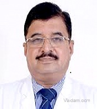
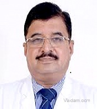

THE APOLLO WORLD OF CARE
ASSURING ADVANCE ACCESSIBLE
Our team of over 7000 doctors join to give you the best of mordern healthcare to ensure you stay healthy always.
WHY CHOOSE APOLLO?

CLINICAL EXCELLENCE

HOSPITALITY AND LOVING CARE

SUPERIOR TECHNOLOGY

QUALITY CARE AT 1/10 COST

COLLABORATIVE CARE

ROBOTIC SURGICAL SYSTEM
Dr. Kumud Rai
Vascular Surgeon
APOLLO HOSPITAL

BOOK AN APPOINTMENT
DIRECTOR
MS, MBBS,FELLOWSHIP,32 YEARS OF EXPERIENCE
Vascular Surgeon
APOLLO HOSPITAL
BOOK AN APPOINTMENT
DIRECTOR
MS, MBBS,FELLOWSHIP,32 YEARS OF EXPERIENCE
MS, MBBS,FELLOWSHIP,32 YEARS OF EXPERIENCE
PROFFESIONAL JOURNEY
ABOUT DOCTOR:-
*Dr (Col) Kumud Rai is a renowned & respected Vascular Surgeon in India.
*He has a varied experience of over 32+ Years & has pioneered Vascular Surgery.
*Dr Rai did her MBBS & MS (Surgery) from eminent AFMC College, Pune. Following which he did a Fellowship from Erasmus University, Holland.
*He has been bestowed with the Presidential Citation Award, Pioneer in Vascular Surgery Award, INDOVASC, Vice President International Society for Vascular Surgery and Sena Medal by President of India for his services in Kargil War.
*Dr Rai special interest lies in Carotid Surgery, Aortic Aneurysm Repair (open & EVAR), Peripheral Bypass Surgery (aorto-femoral, fem-distal) and Dialysis Access Surgery (Fistula/Grafts).
SPECIALIZATION:-
*Carotid Surgery
*Dialysis Access Surgery (Fistula/Grafts)
AWARDS INFORMATION:-
*Sena Medal by Indian Army
*KL Chopra Oration 2011 by IMA New Delhi Branch
*Seva Ratan Award by Sevayatan Hospital Jaipur
*Presidential Citation Award, SVS
*Pioneer in Vascular Surgery Award, INDOVASC
EDUCATION:-
*MBBS, 1978, AFMC, Pune
*MS, 1984, Pune University
*Fellowship, Erasmus University,Hollan
WORK EXPERIENCE OF DR. KUMUD RAI:-
*Director, Apollo Hospital, Saket, New Delhi
*Head of Department, Army Hospital, R&R New Delhi
*Professor, AFMC ,Pune